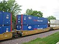

cargo

Definition: Cargo consists of goods conveyed by water, air, or land. In economics, freight is cargo that is transported at a freight rate for commercial gain. Cargo was originally a shipload but now covers all types of freight, including transport by rail, van, truck, or intermodal container. The term cargo is also used in case of goods in the cold-chain, because the perishable inventory is always in transit towards a final end-use, even when it is held in cold storage or other similar climate-controlled facilities. The term freight is commonly used to describe the movements of flows of goods being transported by any mode of transportation.Multi-modal container units, designed as reusable carriers to facilitate unit load handling of the goods contained, are also referred to as cargo, especially by shipping lines and logistics operators. When empty containers are shipped each unit is documented as a cargo and when goods are stored within, the contents are termed containerized cargo. Similarly, aircraft ULD boxes are also documented as cargo, with an associated packing list of
Source: Wikipedia
Wikipedia Page (Something wrong with this association? Let us know.)
Wikidata Page (Something wrong with this association? Let us know.)
Occurs in: